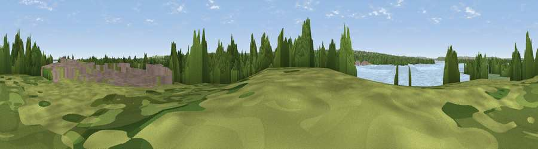

Motney Hill
#42432 in England · top 89% of its area beats it · near Lower RainhamWhere it is
The exact computed spot (TQ 82724 68384). Click the marker for map links.
The view, rendered

A 360° render of this exact spot computed from the terrain model, tree cover and land cover — summer colours, afternoon light, calibrated against photographs of famous viewpoints. Real trees, hedges and buildings will differ in detail.
The panorama
Grey silhouette: terrain skyline in each direction (720 bearings, Earth curvature and refraction included). Dashed green: skyline with trees (+15 m) and buildings (+8 m) as obstacles. Blue strip: how far the ground is visible on each bearing.
Where the view opens
Wedge length = distance to the farthest visible ground on that bearing (vegetation-aware). Rings at 10, 25 and 50 km.
What fills the view
36% water · 23% grassland · 19% woodland · 11% built-up · 9% cropland · 1% wetland
Angular shares of the visible panorama (visual magnitude), not map area. Landscape diversity 0.67 (0–1 Shannon).
Key numbers
More beautiful places nearby
The staircase of upgrades: each row has a higher view potential than everything closer. Driving times are estimates from straight-line distance, calibrated against real road routing — check an actual route before setting out.
| Place | Direction | Drive | Score |
|---|---|---|---|
| Viewpoint near Hale | WSW · 5 km | ~10 min | 40.4 |
| Callum Hill | ESE · 5 km | ~11 min | 59.5 |
| Viewpoint near Boxley | SSW · 10 km | ~19 min | 65.4 |
| Viewpoint near Boxley | SW · 10 km | ~20 min | 68.6 |
| Viewpoint near Westwell | SE · 25 km | ~41 min | 72.2 |
| Viewpoint near Lympne | SE · 43 km | ~63 min | 72.6 |
| Tolsford Hill | SE · 45 km | ~65 min | 77.9 |
| Viewpoint near Capel-le-Ferne | SE · 51 km | ~72 min | 80.2 |
51.38508, 0.62456 · source: osm peak · position refined by local search. Computed location — check access rights before visiting.